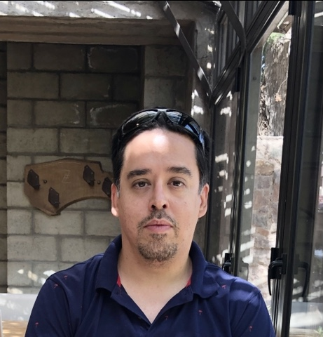

Ecuaciones Diferenciales (PROICO 03-2023)

Associate Professor, Departamento de Matemática (FCFMyN) Universidad Nacional de San Luis Assistant Researcher, CONICET – Instituto de Matemática Aplicada San Luis (IMASL) jfspedaletti@unsl.edu.ar
I work on nonlinear partial differential equations, with an emphasis on nonlocal and fractional operators set in Orlicz–Sobolev spaces.
Much of my recent work concerns eigenvalue problems for fractional quasilinear operators when the underlying Orlicz space is not reflexive, that is, when the usual Δ2 growth condition on the Young function is dropped. In that regime the standard variational machinery is no longer available, and existence, multiplicity and the asymptotic behaviour of eigenvalues have to be reconstructed almost from scratch.
A second line concerns shape optimisation and optimal design problems for local and nonlocal energies: how optimal configurations behave as the fractional parameter s tends to 1, and what survives of the local theory in the nonlocal setting. This was the subject of my doctoral thesis and remains a recurring theme in my work.
My research is currently self-funded through my own private investments, rather than through publicly funded research projects.
See also my arXiv listing and the profiles below.
Faculty member at the Departamento de Matemática, Facultad de Ciencias Físico Matemáticas y Naturales, UNSL, since 2005.
I am happy to supervise licenciatura, master's and doctoral theses on nonlocal and nonlinear elliptic equations, eigenvalue problems, and shape optimisation. A solid course in real analysis and some familiarity with Sobolev spaces is enough to start; the rest can be learned along the way. If you are a student at UNSL and this sounds interesting, write to me and we can talk about possible topics.
Last updated: September 2026.